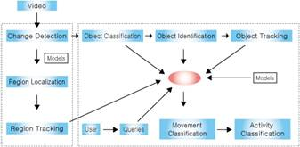

Paper Title :
Video Surveillance Systems and Future Requirements of the Security Market in United Kingdom and Korea
Abstract
In recent years, the world has been threatened by crime and terrorism. As a result, many countries have attempted to improve their public security through the utilization of video security devices. In particular, the huge scale of ubiquitous security system infrastructure has expanded throughout the world. On the other hand, a number of social and technical problems have surfaced recently, which has caused privacy infringement and the requirement of hardware performance for image recognition.
To address these issues, smart video surveillance technology is becoming the backbone of the social infrastructure to analyze and manage images. Yet, many problems still remain before security can reach ideal performance because of the limitations of computing performance and lack of image recognition technologies.
This paper discusses the recent video security market environment and assists to predict the future requirement for video surveillance market in United Kingdom and Korea. Through study of security technology trends, it constructs a list of video surveillance technologies that compare with the market requirement for the future and suggest the proper way to develop video security systems.
Author:
June-Suh Cho
Hankuk University of Foreign Studies
College of Business Administration
Seoul, Korea
Paper Transcript of Paper Titled :
Video Surveillance Systems and Future Requirements of the Security Market in United Kingdom and Korea
Video Surveillance Systems and Future Requirements of the Security Market in United Kingdom and Korea
June-Suh Cho
Hankuk University of Foreign Studies
College of Business Administration
Seoul, Korea
Abstract - In recent years, the world has been threatened by crime and terrorism. As a result, many countries have attempted to improve their public security through the utilization of video security devices. In particular, the huge scale of ubiquitous security system infrastructure has expanded throughout the world. On the other hand, a number of social and technical problems have surfaced recently, which has caused privacy infringement and the requirement of hardware performance for image recognition.
To address these issues, smart video surveillance technology is becoming the backbone of the social infrastructure to analyze and manage images. Yet, many problems still remain before security can reach ideal performance because of the limitations of computing performance and lack of image recognition technologies.
This paper discusses the recent video security market environment and assists to predict the future requirement for video surveillance market in United Kingdom and Korea. Through study of security technology trends, it constructs a list of video surveillance technologies that compare with the market requirement for the future and suggest the proper way to develop video security systems.
Keywords: Security, video surveillance, CCTV
- INTRODUCTION
The video surveillance industry is part of the Information Technology (IT) industry that generates added value business that looks toward the future. Although the Lehman Brothers crisis was in 2008, the consumption of security systems in the global market did not comparatively decrease [8]. After the 9.11 terror attack in America and the dispatching of U.S. troops to Iraq, the surveillance market has increased because of threats of retaliatory terror [7]. As a result, security observations today focus on military facilities, casinos, car parks, airports, department stores and malls, and banking facilities). The reason of the increase in the security market is that the security market is a high potential market because the public and private organizations are required to maintain security, and multimedia can apply surveillance technology successfully based on the rapid acceleration of development in technology today [1].
The video surveillance market is expected to grow from US $11.5 billion in 2008 to US $37.7 billion in 2015 at a Compound Annual Growth Rate (CAGR) of 20.4% from 2010 to 2015 .
Due to the development of new computer, network, and multimedia technologies, security system concept has evolved into a wireless system from its original cable system and the storage medium has also developed into the wireless Digital Video Recorder (DVR).
According to with such surveillance system market growth, the consumption of digital security and network base systems is increasing, causing increased user demand from those entities that need to install security systems. Many countries have also passed legislation to install security system in public places, further expanding the surveillance and security market.
Analogue Closed Circuit Television (CCTV) to DVR and the merger of IT with smart image recognition, there has been sustained development. Therefore, the video security system has developed into a smart security system wherein the system recognizes real-time situations and responds automatically based on the security network. Thus, the video surveillance system market has grown rapidly and today’s increasing demand for more surveillance and security options will results in the market continuing its upward trend [32]. A video security surveillance technology has been developed from the existing passive technology which simply recoding facilities and passers to intelligent technology to recognize situations in real time and respond by itself.
In this study, the security technology and market will be analyzed through an examination of its footprint and future requirements of the video surveillance market will be reviewed.
- BACKGROUND
Global terrorism has led countries to invest more resources into developing surveillance technology to ensure homeland security. In general, CCTV systems based on VCRs have been replaced by DVR systems while the network-based system is coming to replace DVR systems. In conclusion, the major trend for security technology will focus on networking and intelligence, enabling the system to transmit and analyze video data automatically.
- Video Surveillance
[27] defined video surveillance as a one of physical security field that obtains visual information to observe a particular user through use of such video equipment as a camera, recorder and image storage. This system is a section in the plan for physical security. The CCTV which is widely used for public surveillance is part of a television system. [30] classified CCTV as a kind of industrial television called Industry TV (ITV) and is used for industry, transportation, education, medical care, and prevention of disasters.
The range of the video security industry includes equipment production, installation and delivered goods and companies related to the surveillance system effort. The video security system is not a completely independent item since the system is assembled using several components. Accordingly, the components and the system have been developed together. Recently, due to the digitalization of electronic products, the demand for digital storage using CCTV is increasing [6].
As mentioned, the video surveillance industry has numerous features. At first, the security system was an assemblage of diverse parts the components of which are produced by mass production and then sold as assembled goods. Consequently, security system market has known that there are low entry barriers and price is a keen competition factor comparatively.
However, while this kind of industry is changing from a labor-intensive industry to a technology-intensive industry, the security business has developed into an advanced industry due to technology innovation. Moreover, the security market is become known as a high- value added market with a high potential because of computer, network and multimedia technology development. Secondly, a security system requires having a close relationship with the manufacturer, seller and installer for both system stability and effective software up- grades. Lastly, the consumption of security systems tends to increase when the economy is slack because the society needs to adjust to unsettled circumstances. In addition, the acceleration of the information society is based on security getting to the applied market which is connected to the video security industry and its applied technology. Thus, the surveillance system market is today a high potential market.
- The Video Security Market
With the increase in crime and terrorism and the associated expansion of security needs, the video surveillance market will continue to expand. Especially, due to the change in security systems from analogue to digital -based on network systems, the market in the world faces a revolution that lead to market expansion and more technology development.
According to Market & Business Development , in the European market, especially the United Kingdom, the market is already more mutual than in other countries, but still, many systems in England have been in use now more than 10 years. Therefore, these systems will require changes to new systems and upgrading. Overall growth of CCTV market is predicted to increase by a cumulative 8% in real terms between 2010 and 2015.
In the Asian market, the export market is bigger than the import market already developed by Original Equipment Manufacturing (OEM). In particular, product from South Korea, Japan, China and Taiwan is cheaper than product from Western comparatively, and the quality is high enough to export to the developing market. In China, the video security market accounts for 70% of the whole security market, and that market has shown more than 29% growth every year since 2005. In the future, the Chinese video security market is expected to rocket higher because of the coming huge demand for security amid economic growth. By 2018, the Chinese market may surpass the American market.
In America, after the 9.11 terror attacks, the consumption of security systems has increased because of raise in security awareness. Particularly, security systems with sensor equipment and DVRs tend to be a brisk market [29].
- Video Surveillance Technology
After the 9.11 terrorist attacks, the importance of national security grew and the effort to maintain security has been continued in many countries in the world. Based on this trend, the development of video surveillance systems has focused on uses in society. As a result, the history of video security systems, from analogue CCTV to digital systems such as digital storage, intelligent visual recognition, and Internet Protocol, has continued to evolve [35]. Through these advanced technologies, the surveillance system is upgraded from recording images manually in the past to recognizing the event in a real-time system automatically on the network. Moreover, in airports, military compounds, buses, the underground, offices, and shopping malls, the use of CCTV systems has been expanded.
- The Evolution of Video Surveillance Technology
The evolvement of security systems has focused on the development of intelligent visual surveillance, biometrics, and traditional CCTV systems [21]. Intelligent visual surveillance systems have evolved to capture, track, and analyze images for military purposes; especially for visual analysis, the development of systems focuses more on performance than reduced costs of hardware [27]. Meanwhile, biometrics have been developed for fingerprint recognition; more recent inventions of iris scans and face recognition have further evolved video security technology. In addition, video security systems based on CCTV and DVR continue to develop as a high performance security method for industries [12].
Traditional CCTV system technology can be defined as a system that receives video signals from the camera through a network, displaying the video on the monitor [27]. However, due to the massive numbers of cameras and video data, it is quite difficult for humans to analyze and conduct surveillance in real time, which as motivated the development of a new generation of systems integrating and utilizing Information Technology.
Recently, some efforts in intelligent video surveillance systems based on locations of moving objects can intelligently tracks and records interesting objects in multiple objects environment [26]. The aim of intelligent video surveillance systems is to interpret video data and analyze the interaction of objects in real time through detection, tracking, and recognition. These technologies are related to image processing and computer technologies such as visual angle processing, pattern analysis, artificial intelligence, and data management technology [23].
- Current Video Surveillance Technology
The use of CCTV with DVR systems has been a major trend since the 2000s [28]. Initially, traditional CCTV systems recorded video that was transmitted to monitors in control centers through a closed line. However, evolving IT technology has meant the development of video security systems from video cassette recorders (VCR) to DVR based on image compression and digital transmission technology. Recently, advanced systems have emerged with networks based on IP applied using Broadband Convergence Network (BCN), image analysis, and recognition technology [34].
Current video surveillance systems consist of a camera (CCTV), display, network linking camera and display, and storage to record the video briefly [19]. According to [13], the image sensor in cameras has evolved from black and white to color with high resolution and megapixel classes. The camera is mounted on a pan-tilt zoom (PLZ) that can be controlled by users using the PLZ controller in the CCTV center, and the camera can magnify and track objects in the image. DVRs became commercialized in 1997 and have become a major CCTV system trend. In general, the DVR system uses 16 channels to link the camera while the video is recorded as compressed video data. The type of compression is usually MPEG-4, but H.264 will replace the standard of video data compression type in the near future because of its higher compression efficiency and flexibility [19]. The most important element for DVR systems is stability; the systems work 24 hours a day, 365 days a year, without malfunction. In addition, the recorded video can be searched by time, day, camera, and event. The current DVR system is based on PC (stand-alone) and is being developed for mobile and Global Positioning System (GPS). The network transmits a signal using the Ethernet [24].
- VIDEO SURVEILLANCE MARKET
Due to increasing international concerns about security, the surveillance market has grown at an incredibly fast pace in recent years. In contemporary society, menaces to society (e.g., war, terrorism and worse crimes) have grown annually [25]. Accordingly, video security systems are utilized by governments throughout the world. Freedonia Group, Inc. [33] projected that the world’s consumption of surveillance systems is expected to grow 7.4 percent every year by 2014, reaching nearly $100 billion. The biggest market growth is currently occurring in developing counties in Asia, Eastern Europe, Africa, and the Middle East, where the surveillance markets remain undeveloped.
CCTV market in the United Kingdom would have a stronger market if economy were stabilized. After 2008, the video security market was affected by the world economic crisis. As a result, a number of CCTV retailers closed their businesses because of decreasing budgets from the government. Furthermore, a 1.1 percent decrease occurred throughout the construction industry in 2008, followed by an 11.5 percent decrease in 2009. However, the market has been rebounding due to increasing terrorism threats, system upgrades, and the impact of the 2012 Olympic Games .
Since 1997 the general growth of the CCTV market in Korea has increased 20 percent annually, despite the bad economic environment . As the government and local organizations have installed CCTV systems, households have installed security systems as well, resulting in growth in the surveillance market in South Korea. Moreover, CCTV systems have been widely applied for various purposes, such as observations of traffic conditions, private shop security, and black box systems for cars. In addition, the 2018 winter Olympics will further accelerate the demand in the CCTV market.
- Global Market
Due to the rising number of global terrorist incidents, security systems are increasingly recognized as important in the world, which has accelerated the demand of surveillance equipment [18]. The demand for security systems has significantly increased as customers such as the government, military, private entities, organizations, and businesses need them. [18] claimed that the demand for security systems is bigger now despite the world’s economic crisis.
[33] classifies security equipment as either electronic or mechanical. Electronic equipment includes various items operated by electronics, such as CCTV, locks, alarms, and access controls. In general, the growth in demand for security equipment has steadily increased in all periods, although electronic equipment has shown more growth than mechanical security systems.
The world’s demand for access control and CCTV systems will grow to $46,745 million in 2019—more than double the current market size. In particular, the market growth in North America and Asia will increase steeply. Ultimately, the data in this section demonstrate that the global CCTV system market size has generally increased and will continue to do so in the future despite the world economic crisis in 2008.
- The United Kingdom
1) Public Safety Environment (Crime & Terrorism)
A) Crime: The general trend indicates that the crime rate steadily increased from 1981 and peaked in 1995 (approximately 19,000 offences). However, the growth of crime subsequently dropped. Currently, the BCS crime rate shows that level of crime is lowest since the BSC was introduced in 1981. In addition, recorded crime from police data also shows a 4 percent reduction between 2010/11(4.2 million offences) and 2009/10(4.3 million offences). Again, the police data on crime indicate the lowest levels since the National Crime Recording Standard (NCRS) was introduced in 2002. Based on this information, the crime rate in Britain is generally on a downward decline now.
Latest figures from the Crime Survey for England and Wales (CSEW) were 8.6 million crimes in England and Wales, based on interviews with a representative sample of households and resident adults in the year ending March 2013. This represents a 9% decrease compared with the previous year’s survey. This latest estimate is the lowest since the survey began in 1981 and is now less than half its peak level in 1995.
B) Terrorism: The history of terrorism in England is no more significant than in other European countries, except with the regard of terrorist activity from the Irish Republican Army (IRA).
Significant collisions between the IRA and the British army continued through the 1990s. Since that time, the British government has endeavored to prevent terrorism by establishing new departments or organizations, such as the Cabinet Office Briefing Room (COBR) committee and the Crime Reduction & Community Safety department [5]. After the 9.11 terrorist attacks in the US, terrorism was perceived to be a crucial issue in England.
Indeed, four suicide bombers struck central London on 7 July 2005 although the British government had invested mass resources into improving its anti-terrorism system. This was one of worst terrorist attacks, resulted in 52 deaths and more than 700 injuries [31].
- Social Policy & Regulatory Environment
Since the 1970s, the British government has endeavored to prevent crime using diverse approaches managed under the Safe City Program by region (e.g., England, Scotland, Wales). However, this turned out not to be the most effective method so the government began to install CCTV in many places where crimes were common, including both private and public areas [37]. Currently, a controversial issue in England is the efficiency of CCTV and associated operational costs. The Home Office claims to need CCTV for the SCP and National Security Strategy (NSS). In contrast, although the CCTV system is helpful in preventing crime, it wastes a huge budget for public security. Indeed, one report states that 78 percent of the budget for public security is spent to operate CCTV systems but results in only a 3 percent reduction in crime. Thus, the government faces a turning point in its CCTV policy.
The change in Britain’s CCTV policy is as follows. Firstly, the Home Office introduced CCTV for crime prevention to establish an ideal system. As a result, the government succeeded in justifying installation to the public. In next period, the CCTV policy was extended to the local government, which followed with financial support and guidelines for operating the CCTV system that created a network between the local police and the main government. In addition, the aim of CCTV operation extended to preventing crime and anti-social behavior; thus, it was installed in a variety of public places (e.g., airport, bus terminal, car parking, theater). Finally, the government rearranged to integrate the CCTV system policy with the local system using standards that enhanced the partnership between the government and local police. In addition, the purpose of CCTV included national security such as anti-terrorism. However, the use of CCTV caused side effects; the most considerable issues were invasion of privacy and the huge operation costs.
- The Market Trend
The United Kingdom is one of the major security equipment markets in the world, which steeply increased after the 1970s when CCTV became popular with the government primarily for preventing crime in urban areas [2]. [9] mentioned that this is an astonishing statistic because more than 4.2 million CCTVs are in use in England, meaning one for every 16 people. In particular, a 50 percent growth occurred between 2009 and 2014. Finally, the demand for access control and CCTV equipment size is predicted to reach 2,700 million dollars by 2019.
- South Korea
- Public Safety Environment (Crime & Terrorism)
A) Crime: During this five-year period, the number of crime incidents increased, resulting in an upward trend in 2012. In general, the trend in TABLE I, the crime rate in Korea may continue to increase. In Table I show that the crime trends in South Korea, it shows total crimes are decreased but aggressive crimes such as violent, etc. are increased.
TABLE I. Crime in South Korea
Crime |
2008 |
2009 |
2010 |
2011 |
2012 |
Total |
2,063,424 |
2,020,196 |
1,785,404 |
1,752,598 |
1,793,400 |
Violent |
305,435 |
315,850 |
292,492 |
311,948 |
312,579 |
Theft |
223,204 |
256,419 |
269,439 |
281,362 |
290,460 |
Intelligent |
260,052 |
282,044 |
268,307 |
279,802 |
295,101 |
B) Terrorism: Generally, Korea has not been attacked by international terrorists in recent times, and North Korea has been responsible for almost all terrorism-related incidents - including shootings, explosions, kidnappings, and hijackings - since 1953. In the 1980s, the Korean government focused on preparing for the 1988 Seoul Olympics using an anti-terrorism system to prevent accidents such as those in the 1972 Munich Olympic terror attacks [16].
During the 1980s, notable terrorist attacks in Korea included the Kimpo International Airport bombing in 1986 and the 1987 bombing of Korean Airlines Flight 858 [36]. This significant increase of terrorism followed increases in global terrorism during this decade. After the mid 1990s, terrorism has not occurred as frequently. However, the possibility for attack still exists because of the tense relationship between North and South Korea.
- Social Policy & Regulatory Environment
Due to the lack of the police manpower and budget, the use of security cameras assists in preventing crimes when the police work to maintain public security. Advanced countries— especially England - have already actively applied CCTV to reduce crime rates successfully. Since 2002, the installation of CCTV has been extended throughout Seoul by Korea’s police agency. According to a report from Seoul’s police agency, a significant crime reduction occurred after utilizing CCTV in the Gangnam area in Seoul, which is the center of the city and often crowded [22]. Although the effect of CCTV is quite useful for decreasing the crime rate, it may cause some side effects related to the infringement of human rights and operation costs. Accordingly, related legislation for CCTV use should be enacted to fix these problems [20].
A report from the Ministry of Public Administration and Security (MPAS) in Korea indicates that the Korean government plans to integrate CCTV in 230 cities according to security, disaster, traffic, and anti-vandalism issues. Ministry of Public Administration and Security estimated that approximately 2.85 million CCTVs are operated for various purposes by police stations or local organizations in Korea. However, CCTVs in many cities have been managed efficiently thanks to their diverse standards and operating systems. Therefore, integration plans for CCTV systems can provide solutions for managing CCTV monitoring.
TABLE II. The plan of CCTV expansion in South Korea (MPAS, 2011)
|
2010 |
2011 |
2012 |
2013 |
2014 |
2015 |
Total |
CCTVCenter |
27 |
34 |
50 |
50 |
39 |
39 |
230 |
Budget |
20.5 |
22.6 |
38 |
38 |
29.6 |
22.8 |
171.5 |
(Million £)
Table II illustrates the installation and integration of CCTV plans for the 230 Korean cities, which will cost about 171.5 million pounds for integration and installation. As many as 28,579 security cameras are planned for installation, thereby creating a new potential security market in Korea.
As previously mentioned, privacy invasion and operational costs impacts should be considered. [14] suggested that legislation should be enacted to minimize such impacts. CCTV is often used in public places that are crowded and seem to have a high potential for crime; as such, they may infringe upon law-abiding citizens’ rights. CCTV use triggers an invasion of privacy that can make people uncomfortable although CCTV helps reduce crime. Therefore, a notice or announcement should be placed near any CCTV and the installation of CCTV should be discussed with local representatives of the village or province. In addition, many security cameras operate to monitor different centers separately, occurring in inefficient management and greater costs. Thus, the plan for integrating CCTV systems to link monitor centers can help reduce operational costs. In brief, the Korean government and local organizations should seek to utilize more CCTV systems to cut crime rates.
- Market Trends
South Korea is one of the major manufacturers of CCTV and DVR systems along with China and Japan. The Korean CCTV market can be affected by the world economy because the export market is bigger than the domestic market. Despite the economic recession in 2008, the growth of the CCTV market in Korea has continued. As previously mentioned, the MPAS security policy will utilize more CCTV systems to address the lack of manpower in police stations, believing the CCTV system can be one of the best solutions for fixing public security problems. In addition, South Korea’s border with North Korea strains its foreign policy. According to a report from Korea’s Defense Acquisition Program Administration (DAPA), approximately 28 million pounds will be required to install CCTV systems with night vision for general outposts (GOP) in the demilitarized zone (DMZ) bordering North Korea .
The access control and CCTV market will reach 840 million dollars in 2019. Moreover, the market will grow by more than 200 million dollars every year.
- FUTURE REQUIREMENTS FOR SECURITY MARKET
This section presents the criteria required for CCTV functions and application, which are considered a market pull. Based on research of the video surveillance market, the major issue of CCTV is crime (including terrorism), military, operation costs, and privacy.
- Crime (include terrorism)
In 2005, London police searched for terrorists from among 6,000 videotapes and files, requiring significant resources [4]. If CCTV systems can identify human faces automatically, they can significantly reduce searches for terrorists. In addition, event recognition can also be helpful for security. For example, an unusually crowded activity may lead to an abnormal event such as terrorism. If large crowds suddenly panic and rush the streets, an even greater emergency situation can arise for police [39].
- Military
Korea requires massive manpower to maintain the border between North and South Korea. Accordingly, the Korean government installed CCTV surveillance systems, but they were not as efficient as expected. CCTV operations using night vision do not provide sufficient visual quality to recognize objects far from the camera. Moreover, the system cannot recognize people—whether friendlies or hostiles (YTN news). An effective surveillance system for the GOP will reduce costs and efforts to maintain the border.
- Operation Costs
Operation costs include installation costs, which mean costs include the cost to manage CCTV systems, such as labor costs or costs for additional equipment [38].
More CCTV systems do not guarantee better security for the public. The inefficient CCTV operating plan reflects the current CCTV system in many countries. Massive CCTV requires more manpower that leads to greater operating costs. However, if each camera is linked with others to the security center, it can reduce labor costs and create a more efficient system.
- Privacy
The CCTV system provides video recordings of human behavior, which makes people photographed by the cameras uncomfortable. Yet video surveillance technology can reduce crime rates and be used as strong evidence in court [27]. To protect individual privacy, CCTV can be defined by legislative and technological solutions. Legislation should be enacted to ensure that CCTV monitoring is carried out only by authorized people and organizations and the period of storage of videos should be restricted. Meanwhile, technology should be used to ensure that video data are password protected to avoid exposure for other purposes. For example, accessing any record should require a password, which will prevent the outflow of video data.
- Limitation and Summary
The major issue for use of CCTV is prevention of privacy infringe and protection in current. Due to side effect of video surveillance system for security, the importance of law or legislation for use of video security system has been focused more in recent. In advanced countries, they already begin to set the related law which is for privacy protection and many companies struggle to develop privacy protection technologies by image mosaicing with password to watch object or people in the video [27]. However, these technologies should be based on advanced image processing that can be possible with high performance hardware which requires more cost [21].
The core element for video security system is separation and tracking technic between background and object in the image that was major issue, and it is still difficult to solve completely and in the near future by present technology. In addition, when the CCTV records video it can be affected by environment such as light, weather and shadow that problem is researched to solve by utilization of infrared, thermal infrared, radar and millimeter wave. Namely, the obtained image by these methods is interpreted to be visible image by image processor.
Thanks for ubiquitous technology; various changes are brought to video security system, e.g. CCTV and DVR. The existing DVR is getting to change to NVR system which is enhanced by network function. Besides, the camera for CCTV is equipped communication and image processor module basically that is getting to be smart camera. The definition of smart camera is that due to appearance of IP camera, development of imbedded system performance and the requirement of image recognition issues smart camera. The smart camera contains multi- function processor which is merged visible and infrared processor that can track and detect object automatically. Yet, the smart camera is based on imbedded computer technology that makes limitation of high performance [3].
- GAP ANALYSIS
- The comparison of Advanced Technology and Future Requirement of Market
- Intelligent Video Security
The intelligent video security technology includes detection, classification and behavior recognition which is based on visual analysis and the technology for intelligent video security has been evolved into more various subjects than CCTV and DVR device. The major subject of intelligent video surveillance is that can be classified i) detecting and tracking object’s movement, ii) recognition and detection for people, iii) large scale system integration [11].
The detecting and tracking object’s movement technology was researched in the Video Surveillance and Monitoring (VSAM) project which was supported by Defense Advanced Research Projects Agency (DARPA) in America. The VSAM system can detects and tracks object. Moreover, the system can classify object as a car or human. In the subject for recognition and detection for people also was tried in the Human Identification at a Distance (HID) project by DARPA that the aim of project was track and analysis for crowd’s movement at a distance. However, these technologies still are not perfect to be commercialized because there are still tasks to solve variable problems which are affected by light, weather and shadow [24].

Figure 1. The Intelligent Video Surveillance Model (Adapted from [11].)
The Figure 1 illustrates the typical intelligent video security system model that can be grouped into change detection, region localization, region tracking which is required for general image processing. In addition, object classification, object identification and tracking can be defined as variable module which is utilized for specific application. The change detection can be defined that is process which finds the different region on the image than previous image when the camera photographs. This step makes region localization and tracking to be possible. The object classification is part process for image processing that distributes, identifies and tracks object based on the model which is already save. This process compares photographed image and the saved model each other [10].
2) Human Identification
According to [15], the human ID technology is based to recognize face, iris and voice which is features for individual. In general, the human ID system scans people’s features with agreement at a short distance. Accordingly, sometimes, this bio information can be twisted and imitated for crime. To solve this problem, the technology which can scan at a distance without agreement that is current trend of human ID system. Normally, for the image recognition technology development requires massive database that takes long time and high cost. In current, the major trend of human ID is iris scan because that can apply for face recognition to be more accurately. In addition, iris scan at distance can be useful for passport control which is based on electronic passport in the airport.
- The Way of Development of Video Surveillance Technology
Normally, the video security system which is based on DVR records video by the CCTV and stores with data compression technology. However, the smart system requires a large scales of computing resource and cost even it work for only single channel [23]. As a result, to achieve integration of smart system with DVR faces many difficulties such as high performance hardware and cost. Even the performance of smart system achieved, each camera should be allocated high performance computer that is difficult to be commercial product. The solution for this gap is the aim of smart camera for the future. Namely, part of work should be processed in the camera and remained work can be done in the main system which is based on distributed processing system. Finally, a great scale of video surveillance system for U-City and U-Airport can create new generation of the market that will be importance issue and the way of development for future video security [17].
- CONCLUDING REMARKS
In the fast paced society, there are numerous, heinous crime and terrorism which threat to public security while the security service does not provide enough quality because of limitation such as lack of budget, manpower and equipment. Therefore, the CCTV system can assist to improve public security. On the other hand, in current, the use of CCTV is criticized from citizens because of privacy infringe.
In this study, the possibility of video security system to meet future requirement of the market was suggested by the proper way of technology development. The video surveillance system continues to be digitization and evolve based on the network. In addition, the smart surveillance and human ID system is integrated which technologies were developed from different background that leads to evolve the system to new generation. The aim of smart video security system is that detects tracks, classifies, recognizes at distance and identifies object. There is no doubt that the video security market will continue to grow in the future.
In conclusion, the government and company should seek the way to satisfy it requirement for utilization of the video security system, and this research can assist further work which study is related with the video surveillance system.
ACKNOWLEDGEMENT
This work was supported by Hankuk University of Foreign Studies Research Fund of 2014
REFERENCES
- Abie, Ali, “The CCTV industry ... the future is now”, Security Focus, 28 (11): 14, 2010.
- Benjamin, Good CCTV and Policing: Public Area Surveillance and Police Practices in Britain. Oxford: Oxford University Press, 2007.
- Broeres P., Architecture Study for Smart Cameras. Delft University of Technology, 2010.
- Casale, D., “EU Institutional and Legal Counter-terrorism Framework”, Defence Against Terrorism Review, 1 (1): 49-78, 2008.
- Clarke, P., Learning From Experience – Counter Terrorism in the UK since 9/11, Policy exchange research, 2007
- Clive Norris, M., “The Growth of CCTV: a global perspective on the international diffusion of video surveillance in publicly accessible space”. Surveillance & Society, 2 (2/3): 110-135, 2009.
- Cohen, E. D., Mass surveillance and state control : the total information awareness project, / Elliot D. Cohen. 1st ed. Palgrave Macmillan, 2010.
- Davitt, E., Security and safety concerns driving physical security market. (http://www.securitymanagement.com.au/articles/security-and-safety-concerns-driving- physical-security-market-131.html ), 2010.
- Deane, Alexander, “The demise of British liberty”. IPA Review, 2010.
- Fleming, N., Smart CCTV learns to spot a problem. The New Scientist, 204 (2738): 1-24, 2009.
- Gouaillier, V., Intelligent Video Surveillance: Promises and Challenges. Aude- Emmanuelle Fleurant CRIM Technopôle Defence and Security, Centre of research informatics in Montreal, 2009.
- Hampapur, A., Brown, L., Connell, J., Pankanti, S., Senior, A., and Tian, Y., Smart Surveillance: Applications, Technologies and Implications. IBM T.J. Watson Research Centre, 2010.
- Hauske, The Image Sensor Market. Research unit of PennWell, 2004.
- Jo, H., Problem and Improvement Methods of CCTV Practical Use For Social Security. Police administration, Suncheon Universiy, 2010.
- Kim, Ivanov.,Mult-Source Human ID. Artificial Intelligence Laboratory and The Center for Biological and Computational Learning Massachusetts Institute of Technology, 2008.
- Kim, J., Anti-Terrorism strategy in Korea. Ph.D. thesis. Yongin University, 2008.
- Kinder, K., “Ubiquitous technologies, cultural logics and paternalism in industrial workplaces”, International Journal of Technology Assessment and Ethics of Science, 5 (3): 265-290, 2008.
- Krueger, A. B., What Makes a Terrorist: Economics and the Roots of Terrorism, Princeton University Press, 2007.
- Kruegle, H., CCTV Surveillance: Analog and Digital Video Practices and Technology. Elsevier, 2007.
- Kwak, D., Effects of Perception of CCTV and Local Environmental Factors on Fear of Crime, Dongkuk University, 2009.
- Lee, J. and Hyunsook J., “Trends in Intelligent Video Surveillance”, Electronics and Telecommunications Research Institute, 23 (4): 80-88, 2008.
- Lee, S., “A Study on Revitalization of CCTV for Crime Prevention”, Korean Association of Police Science, 12 (1-3), 2006.
- Li, L., Huang, W., Gu, I. Y.-H., Luo, R. and Tian, Q., An Efficient Sequential Approach to Tracking Multiple Objects Through Crowds for Real-Time Intelligent CCTV Systems, Institute of Electrical and Electronics Engineers, 38 (5): 125-1269, 2008.
- Mierzwinski, D., “Video and Sensor Data Integration in a Service-Oriented Surveillance System”, Scalable Computing: Practice and Experience, 12 (1): 93-103, 2011.
- Nevin, R., Understanding international crime trends: The legacy of preschool lead exposure. National Centre for Healthy Housing, USA, 104 (3): 315-336, 2007.
- Park, J., Choi, J, Park, M., Hong, S., and H. Kim., “A Study on Intelligent Video Security Surveillance System with Active Tracking Technology in Multiple Objects Environment”, International Journal of Security and Its Applications, Vol. 6, No. 2, 2012.
- Petersen, J. K., Understanding surveillance technologies : spy devices, privacy, history & applications / J.K. Petersen, Rev. and expanded 2nd ed. Auerbach Publications, 2007.
- Poole, N. R., Analysis of CCTV digital video recorder hard disk storage system. Digital investgation, 5 (3), 2009.
- Ratcliffe, J., and Taylor, R. B., “The Crime Reduction Effectsof Public CCTV Cameras: A Multi-Method Spatial Approach”, Justice Quarterly, 26 (4): 746- 768, 2009.
- Remagnino, S., Intelligent distributed video surveillance systems, London : Institution of Electrical Engineers, 2006.
- Rubin, J., Enduring consequences of terrorism: 7-month follow-up survey of reactions to the bombings in London on 7 July 2005. BjPsych, 190 350-356, 2007.
- Singh,Y., Vikram, P., and Yadav, S., “Implementation of a Self-Organizing Approach to Background Subtraction for Visual Surveillance Applications”, International Journal of Computer Science and Network Security, 10 (3): 136-143, 2010.
- The Freedonia Group, Security world: Global video security market, Media Group, Vol. 169, 2010.
- Valera, M., and Verastain, S., A Review of the State-of-art in Distributed Surveillance Systems: In Intelligent Distributed Video Surveillance Systems. IEEE, 2009.
- Vellacott O., Integrating specialist Systems with IP-CCTV. (Indigo Vision), 2010.
- Wang, S., and Arnold, J., “Terrorism in South Korea”, Prehospital and Disaster Medicine, 18 (2): 140-147, 2004.
- Webster, W., “CCTV policy in the UK: reconsidering the evidence base”, Surveillance & Society, 6 (1): 10-13, 2009.
- Wilson D, S., Open-Street CCTV in Australia: A comparative study of establishment and operation. Department of Criminology University of Melbourne, 2003.
- Zhong H., Detecting Unusual Activity in Video, Computer Science Department Carnegie Mellon University, 2010.
- AUTHORS PROFILE
June-Suh Cho holds a B.A. from KyungHee University in Korea, a M.S. in Computer Science from New York University, and Ph.D. degree from Rutgers University. He is presently a Professor of College of Business Administration at Hankuk University of Foreign Studies in Korea. He also had conducted research at EC & Data Management group in IBM T.J. Watson Research Center. Dr. Cho’s research focuses on electronic commerce, CRM, multimedia databases, e-government, and security. He has published articles in IEEE, ACM, and other conferences and journals.
Electronics.ca Research Network. (2011). Global Video Surveillance Market to reach US $37.7 billion By 2015.
(URL http://www.electronics.ca/presscenter/articles/1391/1/Global- Video-Surveillance-Market-to-reach-US-377-billion-By-2015/Page1.html).
Market & Business Development. (2011). Press Release: UK CCTV Market Development Report. (URL http://www.mbdltd.co.uk/Press-Release/CCTV.htm). [Online].
Info4 Security (2010). UK CCTV market has "great potential for growth". (URL http://www.info4security.com/story.asp?storycode=4126084).
Security World (2010). Broken Koran economy in IMF crisis but there was potential.
Crime in England and Wales, Year Ending March 2013 | 18 July 2013
Etnews. (2011). Smart GOP in DMZ.
(http://www.etnews.com/news/detail.html?id=200805130106).